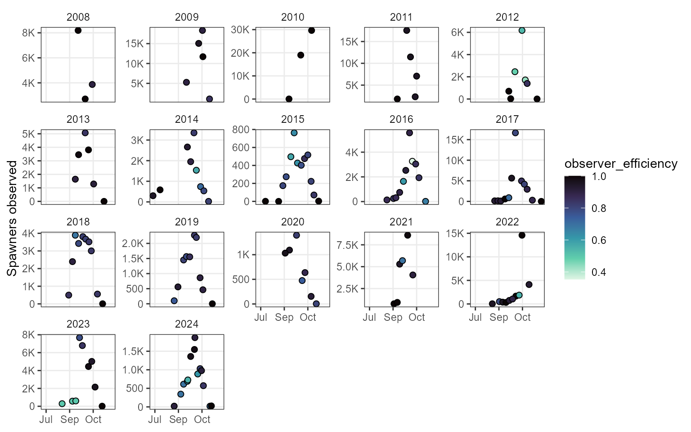
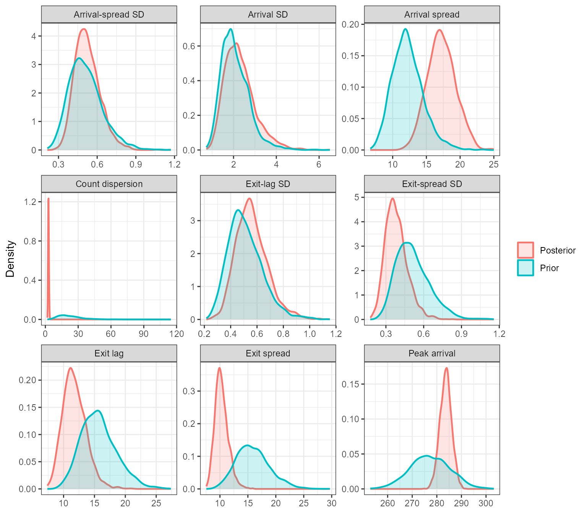
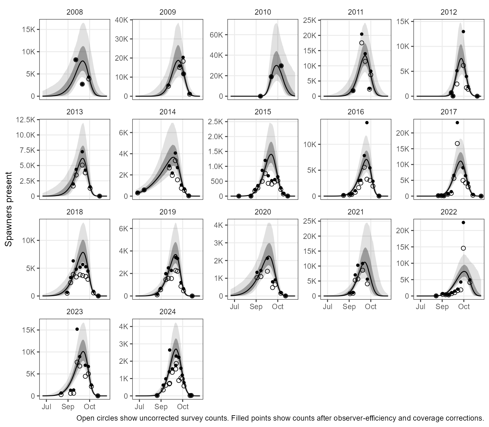
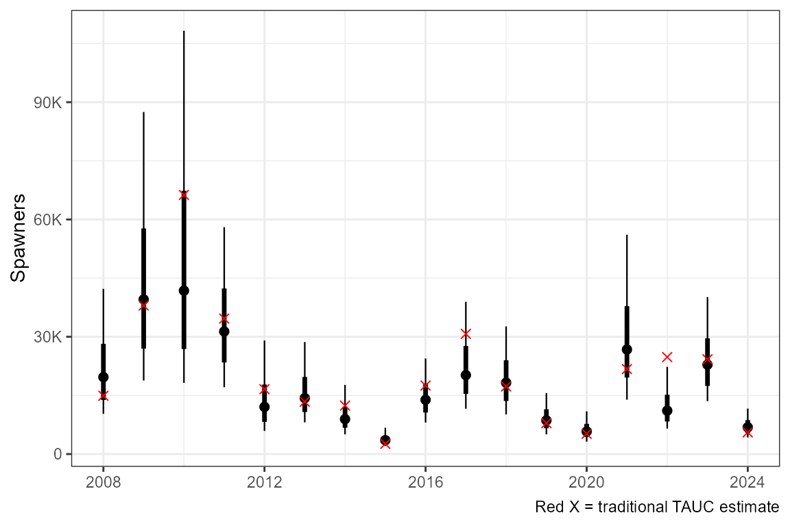
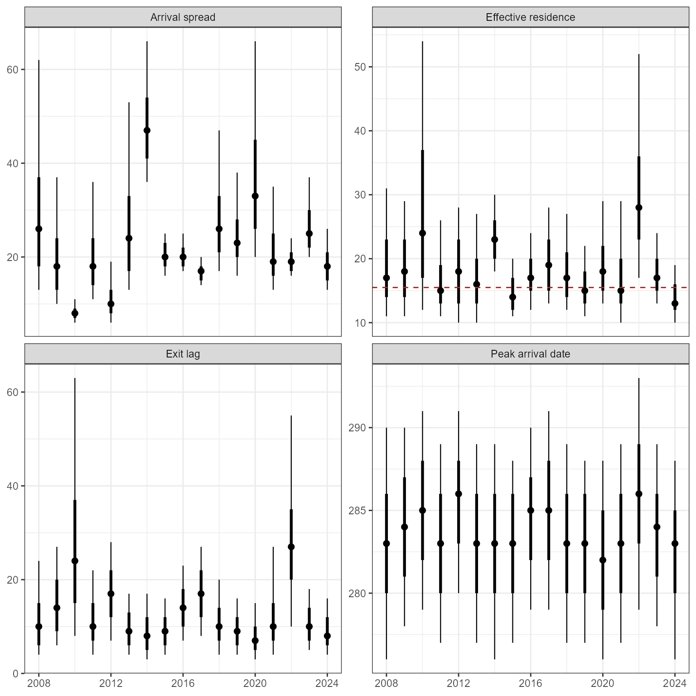

Getting Started with spawnBayes: A Clemens Creek Sockeye Example
Source:vignettes/clemens-creek-sockeye.Rmd
clemens-creek-sockeye.Rmd
library(spawnBayes)
library(ggplot2)
library(dplyr)
library(lubridate)
knitr::opts_chunk$set(
collapse = TRUE,
comment = "#>",
warning = FALSE,
message = FALSE
)Introduction
spawnBayes estimates salmon spawner abundance and run timing from repeated live-count surveys. Unlike traditional area-under-the-curve approaches, spawnBayes estimates abundance, run timing, and their associated uncertainty while allowing residence time to vary among years.
The underlying methodology is described in Thompson et al. (2026).
This vignette demonstrates a complete analysis using sockeye salmon survey data from Clemens Creek, BC, Canada. These data were provided by Diana McHugh, South Coast Stock Assessment, Fisheries and Oceans Canada.
Workflow
A typical spawnBayes analysis consists of:
- Preparing survey observations.
- Validating the data structure.
- Fitting the Bayesian model.
- Evaluating diagnostics.
- Estimating abundance and run timing.
Example data
Load in the example dataset and inspect it. The model requires a date column and a spawner_counts column. Optional observer_efficiency and coverage columns can be supplied to adjust observed counts.
In this case, dates are provided as character strings, and observer efficiency and coverage have been provided as percentages. These will be converted into the proper format in the data validation step.
data(clemens_sockeye)
summary(clemens_sockeye)
#> date spawner_counts observer_efficiency coverage
#> Length:140 Min. : 0.0 Length:140 Length:140
#> Class :character 1st Qu.: 370.8 Class :character Class :character
#> Mode :character Median : 1040.0 Mode :character Mode :character
#> Mean : 2740.3
#> 3rd Qu.: 3367.8
#> Max. :29651.0Validate data
The first step is to validate and standardize the input data. This converts the dates into their proper format and converts observer efficiency and coverage to proportions if they were provided as percentages. Validation may generate warnings if missing correction factors are supplied or if some years show potential evidence of multiple run peaks.
clemens_sockeye <- validate_data(clemens_sockeye)
summary(clemens_sockeye)
#> date spawner_counts observer_efficiency coverage
#> Min. :2008-09-24 Min. : 0.0 Min. :0.3538 Min. :0.5000
#> 1st Qu.:2014-10-21 1st Qu.: 370.8 1st Qu.:0.7963 1st Qu.:0.8000
#> Median :2017-10-28 Median : 1040.0 Median :0.8899 Median :0.9000
#> Mean :2018-01-09 Mean : 2740.3 Mean :0.8512 Mean :0.8772
#> 3rd Qu.:2021-09-29 3rd Qu.: 3367.8 3rd Qu.:0.9570 3rd Qu.:1.0000
#> Max. :2024-11-15 Max. :29651.0 Max. :1.0000 Max. :1.0000Survey observations
Now plot the raw survey counts by date in each year.
ggplot(clemens_sockeye |> mutate(year = year(date), day = yday(date)),
aes(x = day, y = spawner_counts, fill = observer_efficiency))+
geom_point(pch = 21, size = 2) +
facet_wrap(~year, scale = "free_y")+
theme_bw() +
theme(
strip.background = element_blank(),
panel.grid.minor = element_blank()
) +
scale_y_continuous(
labels = scales::label_number(
scale_cut = scales::cut_short_scale()
),
name = "Spawners observed"
) +
scale_x_continuous(
labels = function(x)
format(
as.Date(x, origin = "2023-12-31"),
"%b"
),
name = NULL
)+
scale_fill_viridis_c(option = "G", direction = -1)
Fit the model
spawnBayes estimates annual run timing and abundance jointly across years. Information is shared among years through a hierarchical model, improving estimation in years with sparse survey data.
The settings used in this vignette are intended to keep computation time reasonable. For applied analyses, users should always examine the diagnostic output and increase the number of iterations when recommended. Even so, the model may require several minutes to fit.
fit <- fit_spawner(clemens_sockeye, iter_warmup = 500, iter_sampling = 500, assumed_residence = 15.5, adapt_delta = 0.99, refresh = 0)
#> Running MCMC with 4 parallel chains...
#> Chain 3 finished in 31.7 seconds.
#> Chain 1 finished in 36.5 seconds.
#> Chain 2 finished in 46.0 seconds.
#> Chain 4 finished in 47.9 seconds.
#>
#> All 4 chains finished successfully.
#> Mean chain execution time: 40.5 seconds.
#> Total execution time: 48.4 seconds.Model diagnostics
The diagnostics() function summarizes several indicators
of MCMC sampling performance and model convergence.
diagnostics(fit)
#> converged quality divergences treedepth_hits max_rhat min_ess_bulk
#> 1 TRUE acceptable 0 0 1.01 331
#> min_ess_tail recommendation
#> 1 698 No action required.In this example, all diagnostic checks were acceptable. No divergent transitions were detected, no maximum tree-depth warnings were encountered, and the largest Rhat value was close to 1. Effective sample sizes for both bulk and tail regions of the posterior distribution were sufficient for reliable inference.
When fitting new datasets, users should pay particular attention to:
- Divergences: should be zero whenever possible.
- Tree depth hits: frequent hits may indicate that model settings should be adjusted.
- Rhat: values close to 1 indicate convergence, while values substantially greater than 1 suggest poor mixing among chains.
- Effective sample size (ESS): larger values indicate better estimation of posterior summaries.
The recommendation column provides a summary of whether additional model tuning or longer runs are required.
Prior-posterior comparisons
Prior-posterior comparisons are a useful diagnostic for understanding how much information the data contribute to parameter estimation. When using loosely informative priors, posterior distributions are often expected to be narrower than the priors while remaining largely consistent with them. Prior-posterior comparisons can help identify parameters that are strongly informed by the data and assess whether prior assumptions are reasonable.
prior_post_plot(fit)
Estimated run
The fitted curves represent the estimated number of spawners present through time. Shaded regions show the 66 and 95% credible intervals. Observed survey counts are shown as points. The open circles show the uncorrected survey counts. The filled circles are corrected for observer efficiency and survey coverage.
plot_run_curve(fit)
Abundance estimates
Estimated annual abundance is obtained by integrating the estimated arrival and exit processes over the spawning season.
| year | lower_95 | lower_66 | median | upper_66 | upper_95 | TAUC |
|---|---|---|---|---|---|---|
| 2008 | 10298 | 13839 | 19682 | 28185 | 42258 | 14911 |
| 2009 | 18823 | 26966 | 39551 | 57716 | 87487 | 37985 |
| 2010 | 18217 | 26869 | 41794 | 67336 | 108259 | 66268 |
| 2011 | 17096 | 23425 | 31349 | 42356 | 58033 | 34652 |
| 2012 | 5917 | 8236 | 12059 | 17787 | 29054 | 16593 |
| 2013 | 8098 | 10756 | 14314 | 19721 | 28653 | 13387 |
| 2014 | 5033 | 6737 | 8939 | 12099 | 17688 | 12401 |
| 2015 | 2049 | 2735 | 3553 | 4670 | 6738 | 2611 |
| 2016 | 8073 | 10631 | 13875 | 18011 | 24452 | 17529 |
| 2017 | 11596 | 15402 | 20191 | 27639 | 38948 | 30735 |
| 2018 | 10139 | 13582 | 18264 | 23988 | 32658 | 17290 |
| 2019 | 5044 | 6617 | 8613 | 11457 | 15576 | 7904 |
| 2020 | 3181 | 4418 | 5785 | 7734 | 10928 | 5188 |
| 2021 | 13912 | 19573 | 26741 | 37813 | 56102 | 21745 |
| 2022 | 6507 | 8339 | 11105 | 15163 | 22318 | 24805 |
| 2023 | 13521 | 17433 | 22866 | 29596 | 40155 | 24246 |
| 2024 | 4270 | 5393 | 6855 | 8680 | 11634 | 5543 |
The abundance plot shows the median (point) as well as the 66 and 95% posterior credible intervals. The red x shows the estimate based on trapezoidal area under the curve, with an assumed 15.5 day residence (survey life).
plot_abundance(fit)
# Timing estimatesRun timing summaries describe the estimated distribution of spawner arrival dates, residence, and exit lag in each year.
plot_timing(fit)
Conclusions
spawnBayes provides a framework for estimating salmon spawner abundance and run timing from repeated live-count surveys while accounting for uncertainty in both the observation and process components of the model.
Citation
The methods implemented in spawnBayes are described
in:
Thompson, P. L., Akenhead, S. A., and Louie, C. (2026). Estimating spawning salmon abundance from visual surveys: a hierarchical model of arrival and exit dynamics. Canadian Journal of Fisheries and Aquatic Sciences, 83, 1-13. https://doi.org/10.1139/cjfas-2026-0029
Users are encouraged to cite both the package and the accompanying manuscript when using spawnBayes in scientific publications.